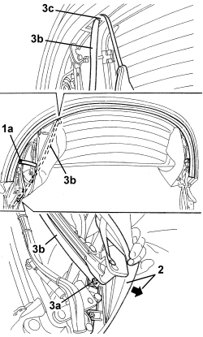
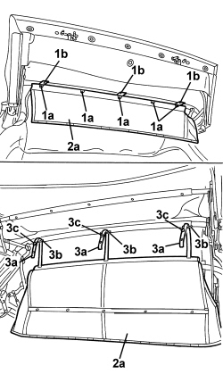
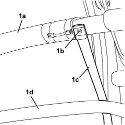
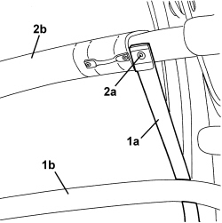
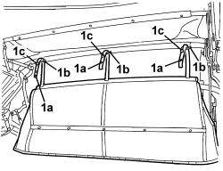
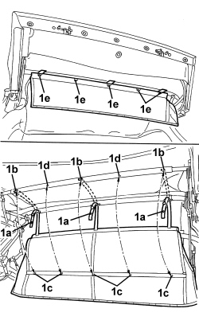
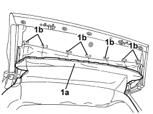
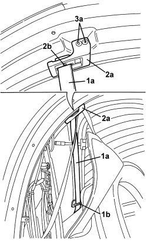
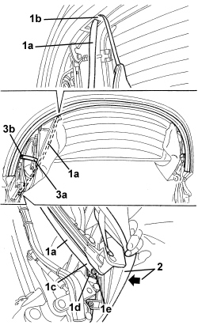

7030H18 FLEXIBLE GUIDE ROD FOR MOVING HOOD REARSCREEN - R.R.
- Path
- Procedures > 70 FITTINGS > 7030 SUN ROOF/GLASS PANEL > 7030H AUTOMATICALLY OPERATED HOOD > 7030H18 FLEXIBLE GUIDE ROD FOR MOVING HOOD REARSCREEN - R.R.
- Kind
- repair procedure (removal / refitting; the operation number is the code)
- Applies to
- engines: 2.2 JTS, 3.2 JTS; all production periods
- Interactive page
- https://sloeber94.github.io/elrnDB-aBrrSpdr/en/#/946004093
Applies to: engines: 2.2 JTS, 3.2 JTS; all production periods
 Removing
Removing
 Refitting
Refitting- Prepare the hood for the operation and discharge the hydraulic system pressure.
Op. 0010T79 HOOD HYDRAULIC SYSTEM - DISCHARGE AND RESTORE PRESSURE
Op. 7030H39 HOOD REAR SEAL - R.R.
Op. 7030H32 HOOD REAR CHANNEL - R.R.
1. Remove the hood inner lining retaining rivet (1a) using a drill (keep the parts of the rivet which has been removed).
2. Move the inner lining slightly.
3. Undo bolt (3a) and release rod (3b) from loop (3c).

Applies to: engines: 2.2 JTS, 3.2 JTS; all production periods
1. Working on the 5th arc, remove the rivets (1a), using a drill (keep the parts of the rivets).
2. Move mounting (2a).
3. If necessary, using a drill, remove rivet (3a) and separate flexible rod (3b) from mounting (2a) (keep the parts of the rivet).
4. Release flexible rod (3b) from loop (4a).
Applies to: engines: 2.2 JTS, 3.2 JTS; all production periods
- Raise the front part of the hood manually.
- Cover vehicle bodywork and upholstery with protective cloth.
1. Disconnect front part (1a) of the interior lining from internal retainers (1b).

Applies to: engines: 2.2 JTS, 3.2 JTS; all production periods
1. Drill out rivets (1a) securing the hood interior lining, then release ends (1b) of the links (keep the parts of the rivets).
2. Let interior lining (2a) lower itself.
3. Extract links (3a) through loops (3b), releasing retainers (3c).

Applies to: engines: 2.2 JTS, 3.2 JTS; all production periods
1. Working on second rib (1a), remove rivet (1b) using a drill and remove flexible rod (1c) by releasing it from third rib (1d) (keep the parts of the rivet).

Applies to: engines: 2.2 JTS, 3.2 JTS; all production periods
Refitting
Removing- Check that the flexible rod is not damaged.
1. Position flexible rod (1a) by passing it above third rib (1b).
2. Fit rivet (2a) connecting the flexible rod to second rib (2b).

Applies to: engines: 2.2 JTS, 3.2 JTS; all production periods
1. Working on the front side of the hood, insert links (1a) into loops (1b) and engage retainers (1c).

Applies to: engines: 2.2 JTS, 3.2 JTS; all production periods
1. Bring perforated ends (1a) of the links into line with holes (1b) in the hoop and bring holes (1c) in the interior lining into line with holes (1b) and (1d) on the hoop, then secure the parts with rivets (1e).

Applies to: engines: 2.2 JTS, 3.2 JTS; all production periods
1. Attach front part (1a) of the interior lining to internal retainers (1b).

Applies to: engines: 2.2 JTS, 3.2 JTS; all production periods
1. Fit flexible rod (1a) in loop (1b).
2. If removed, position flexible rod (1a) on mounting (2a) and fit rivet (2b).
3. Position mounting (2a) on the 5th arc and fit rivets (3a).

Applies to: engines: 2.2 JTS, 3.2 JTS; all production periods
1. Attach rod (1a) in loop (1b), then place end (1c) of the rod on mounting (1d) and screw in bolt (1e).
2. Position the edge of the inner lining.
3. Position rod (3a) and fit rivet (3b).

Applies to: engines: 2.2 JTS, 3.2 JTS; all production periods
Op. 7030H32 HOOD REAR CHANNEL - R.R.
Op. 7030H39 HOOD REAR SEAL - R.R.
- Check that the hood opens/closes correctly, by moving it manually.
- Restore the hood hydraulic system pressure.
Op. 7030H03 HOOD MANUAL OPENING FOLLOWING DEACTIVATION OF HYDRAULIC SYSTEM - CARRY OUT PROCEDURE
- Later on, check that the hood opengs/closes properly using the electric control.